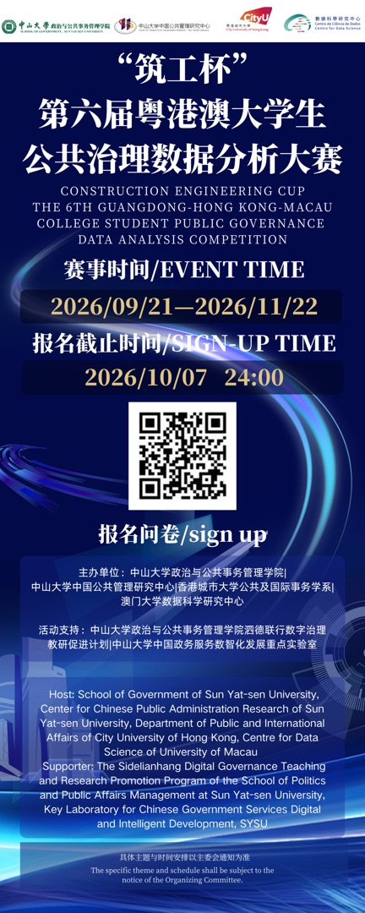
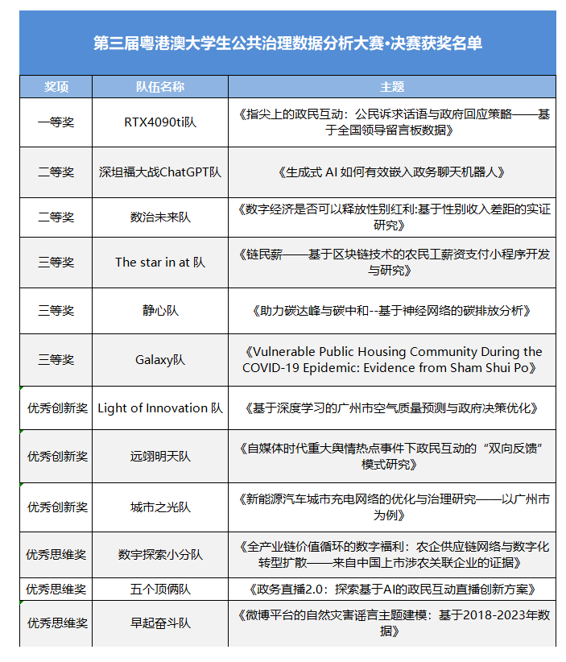
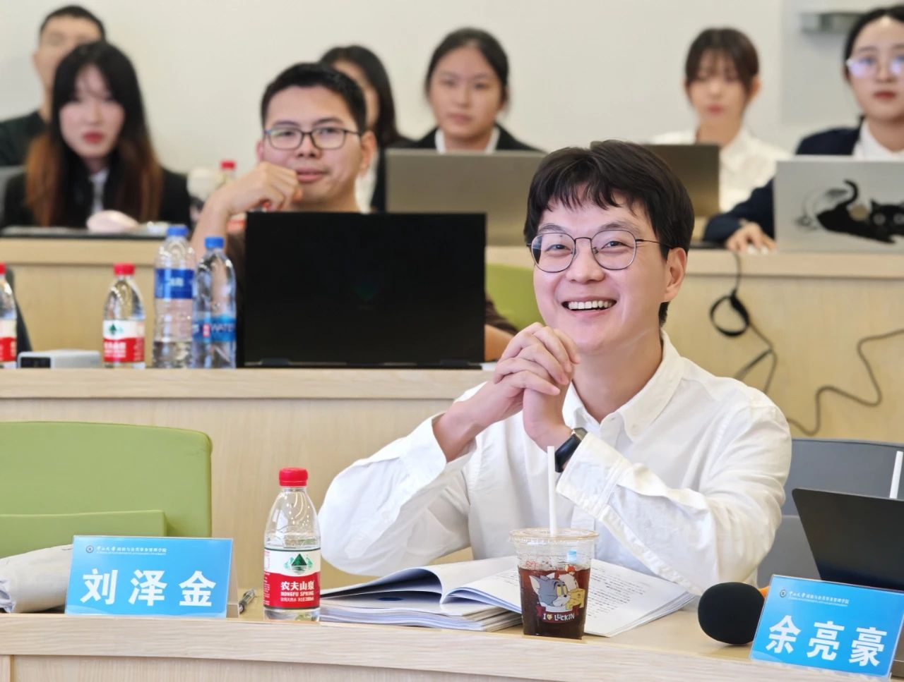
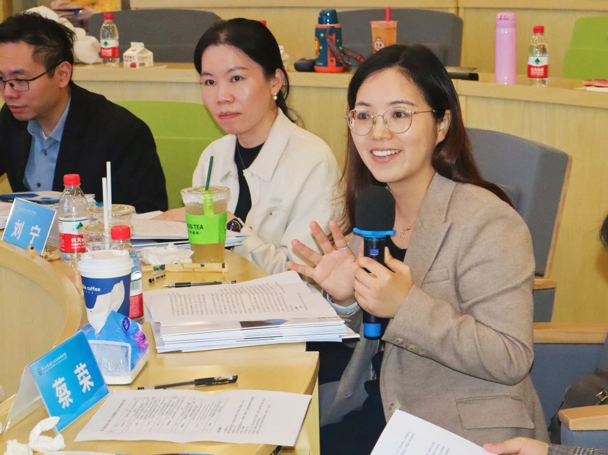
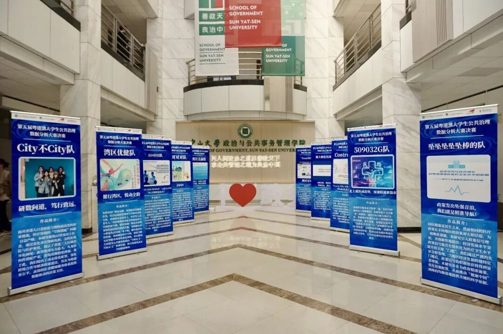
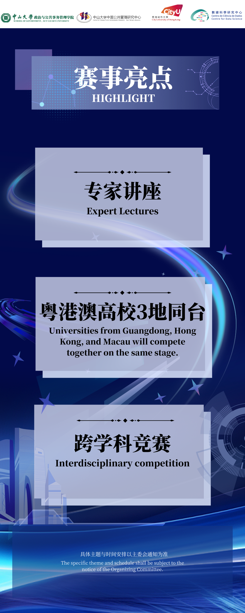
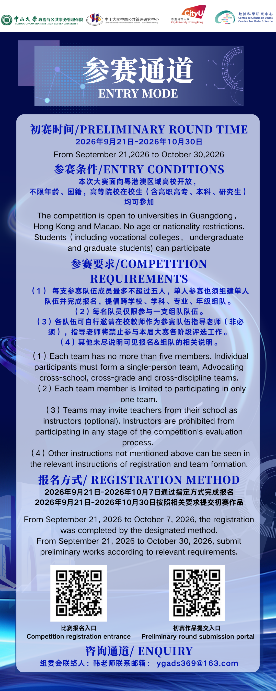
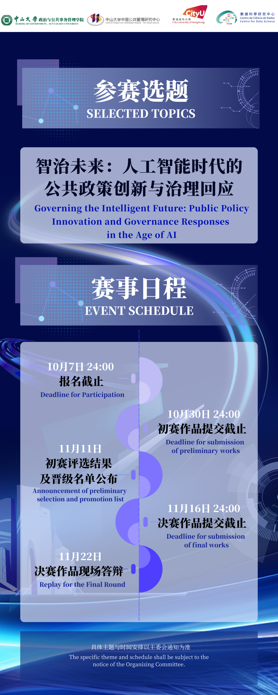
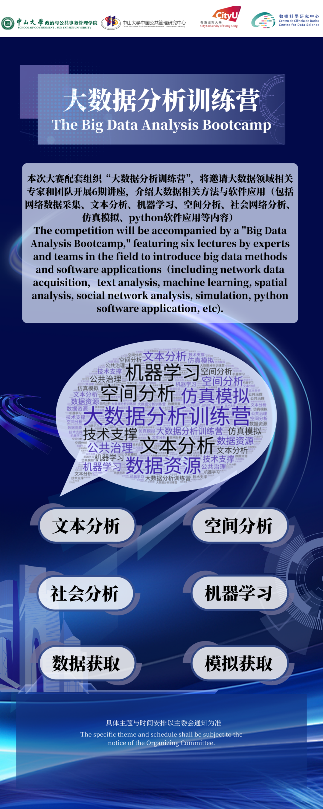
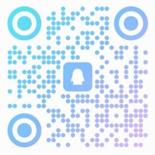

点击任意处关闭 · 按 Esc 关闭
本届主题：人工智能时代的公共治理 —— 用数据思维回应"人工智能+"行动、政府数智化转型、 算法伦理与数据安全等时代命题。中山大学、香港城市大学、澳门大学三地四院联合发起， 是泗德联行数字治理教研促进计划的重要实践项目。

▲ 官方宣传海报（含报名问卷二维码）· 扫码即报 · 大图请点击放大
人工智能浪潮席卷社会方方面面，全面实施"人工智能+"行动、提高政府治理数智化水平、发展泛在可及的数智化政务服务—— 这些时代命题正呼唤青年一代以数据思维回应公共治理的现实需求。大赛旨在鼓励广大学生投身人工智能时代公共治理议题研究， 锤炼数据分析与公共治理实践能力，激发创新意识，强化团队协作。赛事自 2021 年创办以来已连续举办五届， 累计吸引粤港澳三地数百支队伍、数千名学生参赛。
大赛配套 6 期"大数据分析训练营"，邀请大数据领域专家团队开讲，从数据采集到仿真模拟全程赋能。
涵盖技术、管理等多个领域，与粤港澳高校优秀同辈组队过招，在合作交流中结识志同道合的伙伴。
围绕 AI 时代公共治理真实命题展开研究，让数据分析能力真正服务于政策研究与治理实践。
参赛作品需围绕本届比赛指定主题展开。以下是官方给出的参考选题方向（供参考，具体以官方《参赛指南》为准）：
"人工智能+"行动背景下，政府治理流程再造、决策智能化、AI 赋能监管与公共服务的研究。
AI+ 行动泛在可及、智慧便捷、公平普惠的政务服务体验，数字平台上的政民互动与公众参与新形态。
政务服务算法权力与问责、算法歧视、隐私保护、数据安全治理体系等智能时代的规制议题。
伦理与安全老年人等群体面临的数字鸿沟、数字素养、无障碍服务与包容性治理的实证研究。
公平普惠智慧城市、湾区互联互通、公共服务均等化等场景中的数据驱动治理创新。
智慧城市凡契合"人工智能时代的公共治理"主题、具备数据可行性的自选议题均可参赛。
开放式命题面向粤港澳区域高校开放，不限年龄、国籍，高等院校在校生（含 高职高专、本科、研究生）均可参加。单人参赛也须组建单人队伍。
每队成员最多不超过 5 人，可跨学校、跨学科、跨专业、跨年级组队；每名队员仅限参与一支队伍。
组队后可自行邀请在校教师担任指导老师（非必须）。为保证公平，指导老师禁止参与本届大赛各阶段评选。
各队自行选定一名队长，队长须在报名截止前完成全队报名工作；决赛前的成员变更申请也由队长与涉事队员共同提交。
以下时间以官方推文为准；决赛阶段时间为暂定，如有变化将在官方咨询群通知。
大赛发布日起，可通过官方报名问卷报名（二维码见下方"官方渠道"或原文海报）。报名问卷提交截止 10 月 7 日 24:00。报名截止后不再允许添加和更换队伍成员；中途退出只允许队内更换队长或删除队员，且须在决赛前向组委会提交变更申请并经确认生效。
提交报名问卷后，通过初赛作品提交问卷在线提交初赛作品，截止 10 月 30 日 24:00。组委会将审核并取消存在人工标注、抄袭或其他不按要求提供作品的队伍资格。同期大数据训练营 6 期讲座滚动开讲。
预计公布初赛结果与进入决赛队伍名单，并搭建微信群向晋级队伍发布决赛规则。
晋级队伍通过大赛官方邮箱提交决赛研究报告与答辩 PPT，截止 11 月 16 日 24:00。
每队 10 分钟阐述团队报告，随后评委根据报告内容提问 3 分钟，评委根据现场答辩表现打分（具体要求和安排另行通知）。决赛总成绩 = 决赛研究报告得分 + 现场陈述答辩得分，按总得分排名。
以数据分析报告为评审载体，通过提交问卷在线递交；组委会审查资格与合规性（查重、反人工标注、反抄袭）。
晋级队伍经大赛邮箱提交决赛研究报告与答辩 PPT，由评委对报告进行评审打分。
10 分钟团队陈述 + 3 分钟评委问答；往届决赛均在中山大学举行，粤港澳三地队伍同台竞技。
从组队到答辩，你需要准备的东西都在这里。完整规范请下载官方《参赛指南》（见下方"官方渠道"）。
※ 结构依据官方流程图整理，具体格式规范（字体、页数、命名规则等）以官方《参赛指南》为准。
大赛配套"大数据分析训练营"，邀请大数据领域相关专家和团队开展 6 期讲座，介绍大数据相关方法与软件应用。具体培训时间及主题以主办方实际通知为准。
| 期数 | 课程模块 | 你能学到什么 |
|---|---|---|
| 第 1 期 | 采集网络数据采集 | 爬虫与 API 获取政务公开数据、社交媒体数据的合规采集 |
| 第 2 期 | 文本文本分析 | 政策文本、政务留言、舆情数据的分词、主题建模与情感分析 |
| 第 3 期 | 算法机器学习 | 分类、聚类、预测模型的入门与公共治理场景应用 |
| 第 4 期 | 地理空间分析 | GIS 与空间统计：湾区城市治理议题的地图化分析 |
| 第 5 期 | 网络社会网络分析 | 政企互动、协作网络的节点分析与可视化 |
| 第 6 期 | 建模仿真模拟 + Python 应用 | 多主体仿真入门，Python 数据分析全流程实操 |
颁发荣誉证书与奖杯，奖励选题与方法具创新性的优秀作品。
仅颁发给进入决赛的队伍，根据所在队伍决赛评审中的成绩排名结果进行颁发。
自 2021 年创办以来，大赛已成功举办五届，粤港澳三地学子同台竞技、以数会友。
中山大学张书维教授、王海宁副教授、陈馨助理教授及香港城市大学学者担任评审，澳门大学数据科学研究中心（时任代理）主任余亮豪教授致辞。
本届由"筑工杯"冠名，纳入"泗德联行数字治理教研促进计划"，主题升级为人工智能时代的公共治理。
| 届次 | 冠军 🥇 | 亚军 🥈 | 季军 🥉 |
|---|---|---|---|
| 第一届 2022.01 | "回声"队 · 暨南大学 | "数联网智"队 · 澳门大学 | "智同道合"队 · 澳门大学 |
| 第三届 2023.12 | "数智湾区"队 · 中山大学 | "AI 智析"队 · 深圳大学 | "筑梦蓝图"队 · 中山大学 |
| 第四届 2024.11 | "智绘蓝图"队 · 澳门大学 | "码上就有"队 · 中山大学 | "赛博格"队 · 中山大学 |
| ※ 各届奖项称谓略有差异（往届官方多表述为"一/二/三等奖"，与冠/亚/季军等价）；第三、四届完整名单见下方原图；第二、五届名单未见官方公开报道，暨南大学、澳门大学、中山大学、深圳大学等校队伍均曾登顶。 | |||
点击放大查看原件，含获奖队伍全名、成员与学校（图片来自中大、澳大官方报道）。



往届决赛队伍的命名风格与选题气质，供组队定题时参考：
第三届 71 份参赛作品的选题集中在四大方向，研究方法覆盖深度学习、网络爬虫、神经网络、区块链、社会网络分析等：
政民互动、政府回应性、政务直播、政府数据开放等议题的量化研究。
高频方向如"区块链解决农民工薪资拖欠问题"等数字技术赋能经济治理的真实案例。
第三届案例社交媒体数据的测量与应用、网络舆情、数字鸿沟与群体行为分析。
数据易得算法治理、数据安全、隐私保护、平台责任等新兴风险议题。
政策热点| 区域 | 奖项 | 获奖者 |
|---|---|---|
| 香港区 | 冠军 | 陈诺 |
| 亚军 | 汪子涵、汪晨、许诺 | |
| 大湾区 | 冠军 | 林晓静、苏福韵、刘祚彤、梁皓婷 |
| 亚军 | 贺元齐、陈思琪、宋亦清、祝宇峰 | |
| 亚军 | 程子睿、李东庭、周骏、宋雨洋 | |
| 季军 | 唐冰冰、张佳棋、欧芷晴 |
※ 同系列赛事（香港城市大学主办口径），供跨赛区参考 · 城大官方名单页 ↗
获奖研究报告全文未公开上网（涉及作者版权），官方提供的参考途径有三条：

以下为官方推文中的流程长图原件，点击可放大查看细节。




大赛相关资讯将优先在官方微信公众号「SOG微政之窗」发布；参赛指南完整版请通过原推文"阅读原文"获取。
官方报名问卷二维码位于推文海报与流程长图中，请微信扫码填写。截止 10 月 7 日 24:00
微信扫码 · 在问卷中完成报名
赛程变动、决赛安排等重要通知将在群内发布，报名前后的疑问均可入群咨询。
QQ 扫码入群中山大学政治与公共事务管理学院学生会 / 研究生会运营，大赛第一手资讯发布阵地。
微信扫码关注sogyjs@163.com
决赛研究报告与答辩 PPT 经此邮箱提交；投稿 / 咨询以官方说明为准。
决赛材料提交通道